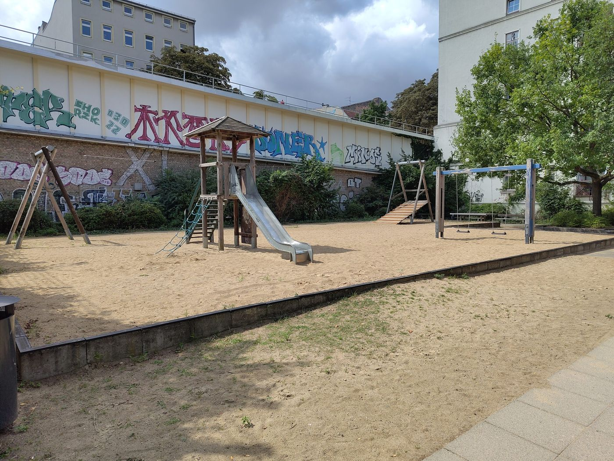
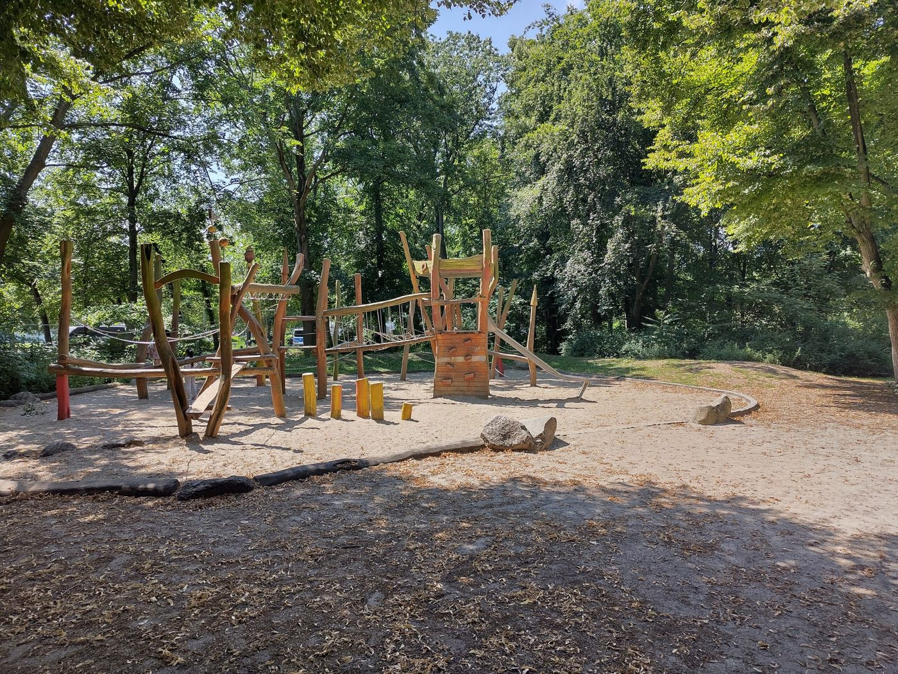
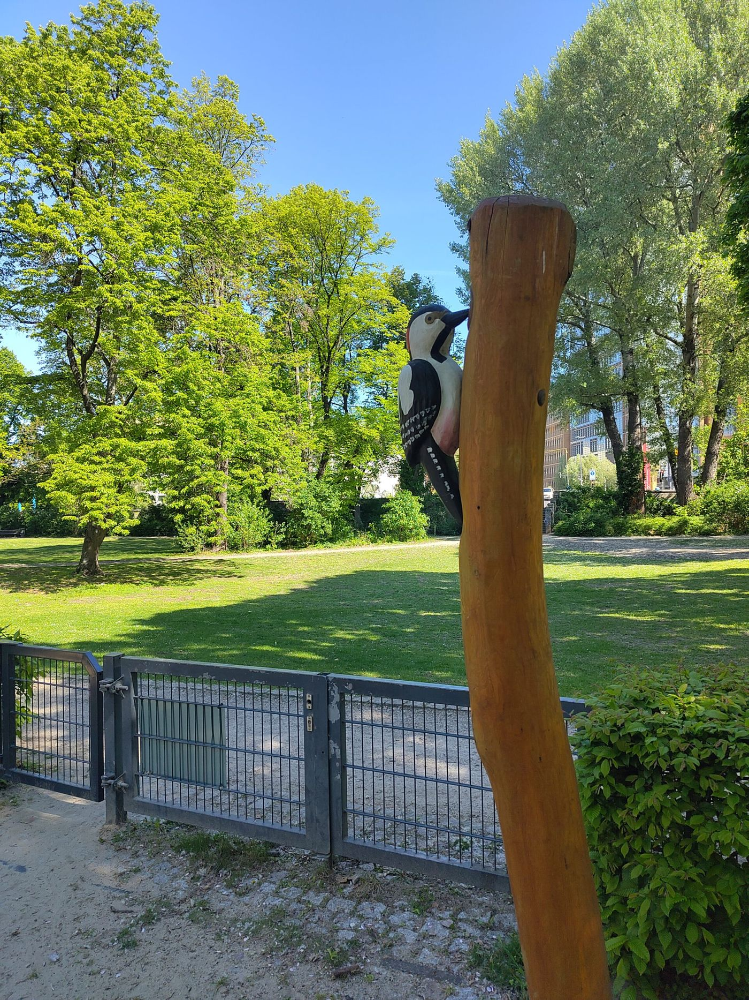
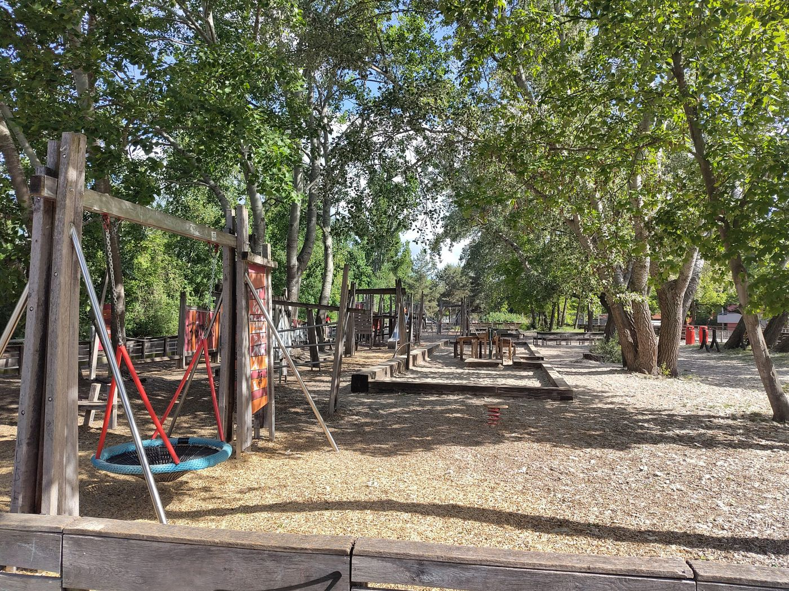
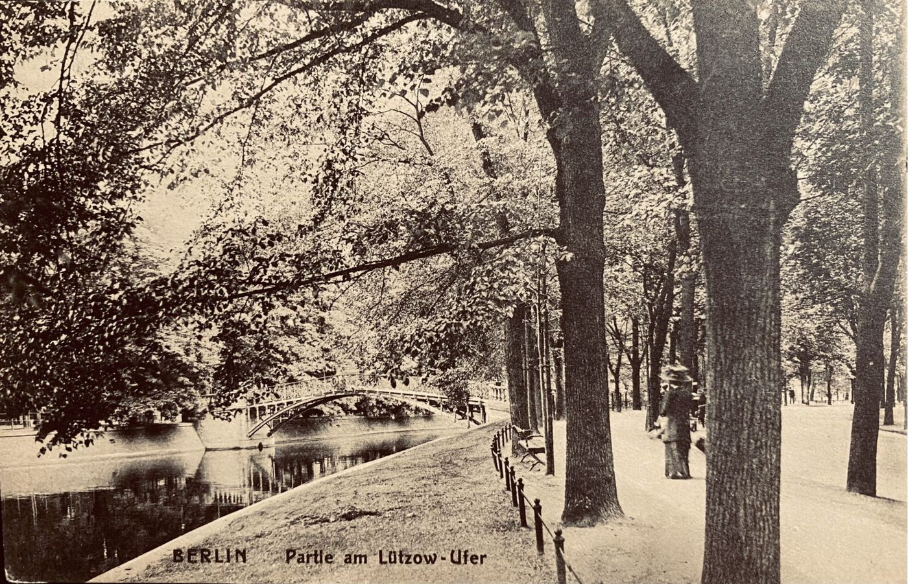
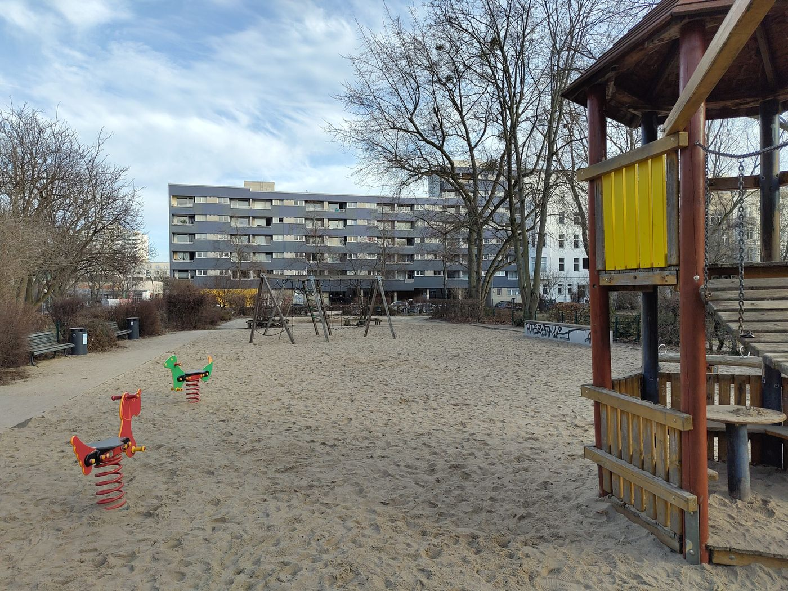
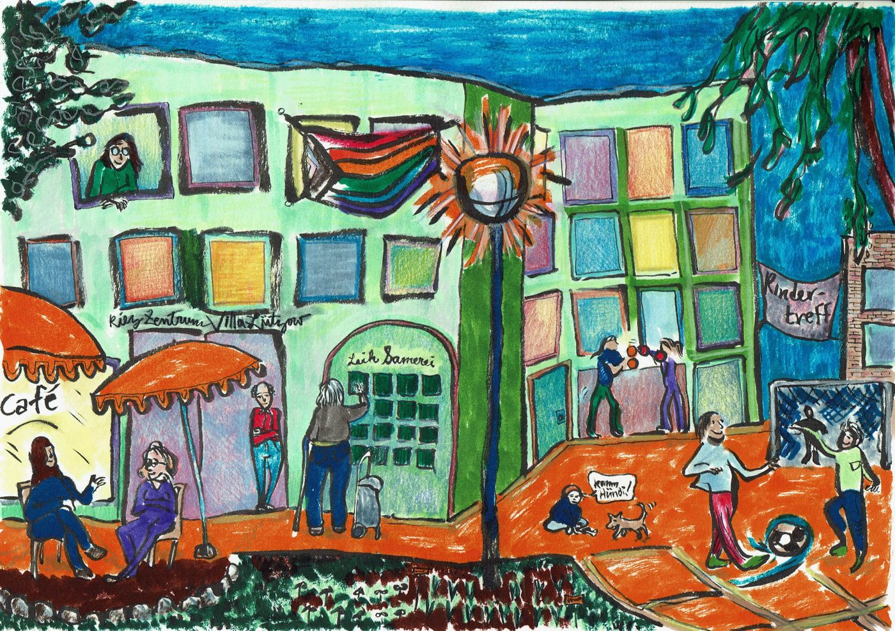
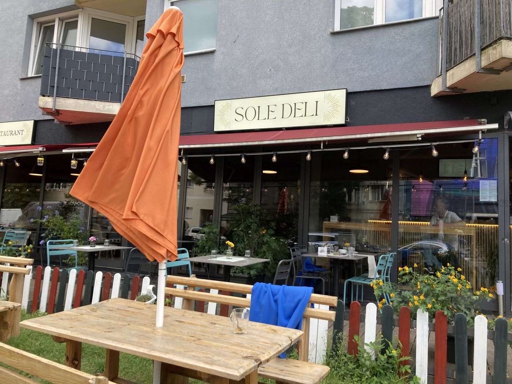

Ausgehen
Wege durch den Kiez. Jeder hat eine eigene Seite: die Stopps auf einer Karte, und ein Text aus den Beiträgen auf mittendran.de. Öffnungszeiten stehen hier nicht. Der Link beim Essen führt auf die Seite des Hauses.
Essen, dann Kultur

Von der Pohlstraße ins Varieté
Essen. Les Climats, Pohlstraße 75 Öffnungszeiten
- Les Climats Öffnungszeiten
- Pohlstraße
- Wintergarten Varieté
In der Nähe essen, dann zum Wintergarten. Der Abend endet mit der Vorstellung.

Diele und Kulturforum
Essen. Joseph-Roth-Diele, Potsdamer Straße Öffnungszeiten
- Joseph-Roth-Diele Öffnungszeiten
- Kulturforum
Ein Glas in der Joseph-Roth-Diele, danach ein Haus im Kulturforum, wenn noch geöffnet ist. Sonst ist der Weg dorthin der zweite Teil.
Spielplatz

Nachmittag auf der Luiseninsel
Essen. Café ODOR, Kurfürstenstraße 21–22 Öffnungszeiten
- Spielplatz Luiseninsel
- Café ODOR Öffnungszeiten
Der Sandspielplatz hinter der Philharmonie. Wasser mitnehmen. Danach das Café ODOR.

Specht-Spielplatz und Gleisdreieck
Essen. Café Jules, Luckenwalder Straße 6b Öffnungszeiten
- Specht-Spielplatz
- Café Jules Öffnungszeiten
- Gleisdreieck
Am Specht-Spielplatz anfangen und im Gleisdreieck bleiben. Aufhören, wenn jemand müde ist.
Spaziergang

Park, dann die Straße nach Süden
Essen. Sofram, Potsdamer Straße 137 Öffnungszeiten
Den Park von Osten queren, auf die Potsdamer Straße kommen und einmal essen. Was abseits der Linie liegt, wartet auf den nächsten Vormittag.

Kanal bis zum Varieté
Essen. Irma la Douce, Potsdamer Straße 102 Öffnungszeiten
- Landwehrkanal
- Potsdamer Brücke
- Irma la Douce Öffnungszeiten
- Wintergarten Varieté
Am Kanal zur Brücke, ins Wintergarten nur wenn eine Matinee wirklich läuft. Gegessen wird bei Irma la Douce, Tür an Tür.
Ein Haus, dann sitzen

Ein Museum, dann Kaffee
Essen. Facil, Potsdamer Straße 3 Öffnungszeiten
- Neue Nationalgalerie
- Matthäikirchplatz
- Facil Öffnungszeiten
Die Neue Nationalgalerie, danach auf dem Matthäikirchplatz sitzen. Kein zweites Museum.
Philharmonie und der Platz davor
Essen. Golvet, Potsdamer Straße 58 Öffnungszeiten
Den Saal von außen ansehen, oder hinein, wenn eine offene Probe ist. Danach Golvet.
Den Kiez kennenlernen

Drei Pins vom Magdeburger Platz
Essen. FreiFläche, Bülowstraße 90 Öffnungszeiten
Vom Platz los, am Schwulen Museum halten, auf dem Lützowplatz enden, solange es hell ist.

Die Potsdamer Straße lernen
Essen. Nihon Mono, Potsdamer Straße 93 Öffnungszeiten
- Villa Lützow
- Nihon Mono Öffnungszeiten
- Potsdamer Straße
Die Villa für das Haus, Nihon Mono fürs Essen. Der Weg dazwischen ist der Punkt.
Queere Geschichte

Vom Museum zum Nollendorfplatz
Essen. SOLE DELI, Zietenstraße 7 Öffnungszeiten
- Schwules Museum
- SOLE DELI Öffnungszeiten
- Kurfürstenstraße 130
- Nollendorfplatz
- Karl-Heinrich-Ulrichs-Straße
Museum, dann essen, dann die Aids-Hilfe und der Platz mit der umbenannten Straße.